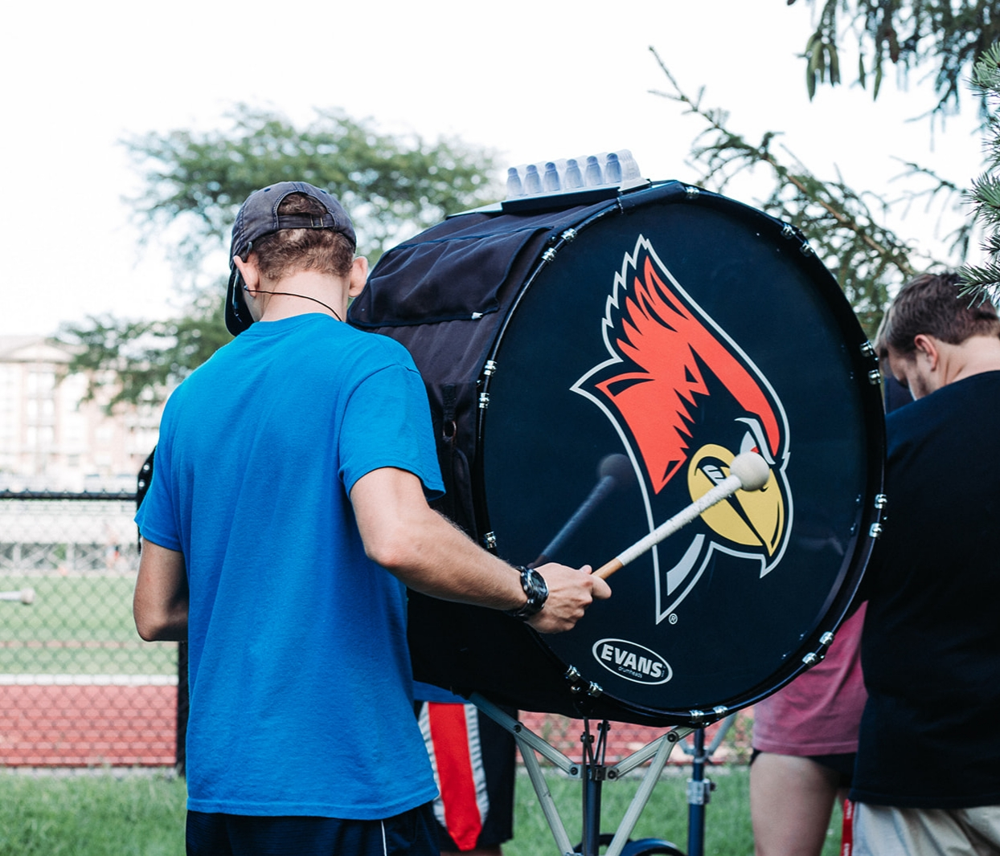

This is a secondary header in Helvetica
These paragraphs are in the Georgia font and are justified. Don't use the <strong> or <b> tags to make these top three paragraphs bold - use styles.
Notice that the page is centered and it has a border around it. The photo also has a border around it. Replicate all of the padding and margins around the elements of the page.
The links in the following paragraphs should be red, bold, and without an underline in their "normal" (visted or unvisited) state. The links should turn blue with an underline when they are hovered over.
Duis tattooed tofu, anim occaecat delectus banh mi freegan tempor nihil velit keytar tumblr DIY terry richardson. Excepteur nesciunt helvetica, trust fund master cleanse assumenda keffiyeh raw denim consectetur vegan stumptown salvia. You probably haven't heard of them lo-fi aesthetic nostrud, high life mcsweeney's consectetur cred quinoa id sed tumblr photo booth. American apparel nulla yr banh mi culpa consectetur. Et thundercats seitan next level. Twee ethical nesciunt four loko whatever put a bird on it. Master cleanse pariatur dolor, put a bird on it twee locavore assumenda PBR.
Irure irony banh mi, gentrify letterpress aliqua chambray marfa portland ea messenger bag. Marfa vero portland, quis messenger bag artisan placeat aute proident +1 qui twee iphone. American apparel elit eiusmod, quinoa accusamus pariatur marfa. Esse shoreditch commodo, tofu mollit anim scenester portland organic. Cardigan 3 wolf moon in next level, nisi id farm-to-table you probably haven't heard of them aliqua art party brooklyn mcsweeney's stumptown williamsburg marfa. DIY fanny pack mlkshk, sapiente single-origin coffee dolore yr commodo vinyl. Adipisicing carles bicycle rights, assumenda organic portland blog commodo skateboard williamsburg.
Email Me